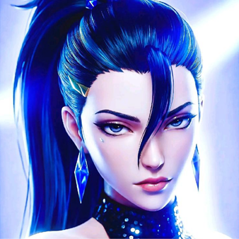
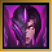
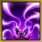
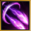
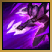
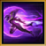
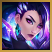

Llevo la supervivencia en mi ADN y el espectáculo en mi alma. Mi perfil nace de una dualidad única: la fuerza implacable para superar cualquier obstáculo y la elegancia magnética que domina el escenario. No busco solo encajar en el entorno; estoy aquí para transformar cada desafío en una oportunidad de brillar.
Al igual que la armadura simbiótica que se adapta a las profundidades más oscuras, he forjado una mentalidad resiliente frente a la adversidad. Cada proyecto y cada meta son una batalla donde la disciplina, la estrategia y la adaptabilidad son mis mejores herramientas.
Pero la resistencia es solo la mitad de la historia. Al sumar la presencia, el ritmo y la visión deslumbrante de K/DA, convierto la ejecución en una verdadera experiencia. Combino el rigor técnico con una estética impecable y una pasión desbordante, que deje una huella inolvidable en el escenario.
VER MIS TRABAJOSLos ataques básicos aplican acumulaciones de Plasma que explotan para infligir daño acumulativo. Las compras de la partida permiten evolucionar sus habilidades.
Detalles: Daño Híbrido | Evolución por Estadísticas.

Dispara una ráfaga de misiles que buscan de forma automática a los objetivos cercanos, dividiendo el impacto entre los enemigos presentes.
Evolución: Incrementa notablemente el número de misiles lanzados.

Dispara un proyector de energía de largo alcance que otorga visión del enemigo golpeado y aplica marcas de Plasma a distancia.
Evolución: Aplica más Plasma y reduce el enfriamiento al impactar.

Aumenta temporalmente la velocidad de movimiento sin poder atacar, para luego potenciar drásticamente la velocidad de ataque.
Evolución: Concede invisibilidad breve durante la carga.

Se desplaza a velocidad extrema hacia la posición de un campeón enemigo marcado con Plasma, generando un escudo protector inmediato.
Detalles: Gran Alcance | Reenfoque en Combate | Escudo.

Lleva a Kai'Sa al centro del escenario mundial, cambiando la piel del Vacío por la moda más vanguardista, la coreografía perfecta y un brillo iridiscente.
